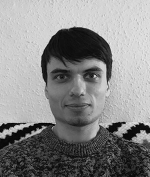

|  |
Przemyslaw Ociepa
Scientist and Photographer
Highly analytical and result-oriented professional with strong analytical, organisational, and management skills acquired through PhD. Substantial experience in various aspects of scientific environment, molecular biology, data analysis, strategic planning, and team building. Recent alumni of the Tech Talent Academy’s Data Academy programme who learnt Python fundamentals, including key data science libraries such as Numpy, Pandas, SciKit, and Tensorflow. In addition to this I am gaining a solid grounding in data analysis using Microsoft Excel, relational database management (SQL), data visualisation packages such as Tableau, and Machine Learning algorithms. I am a keen and adaptable worker looking for entry level data science positions that will utilise this skillsets. |